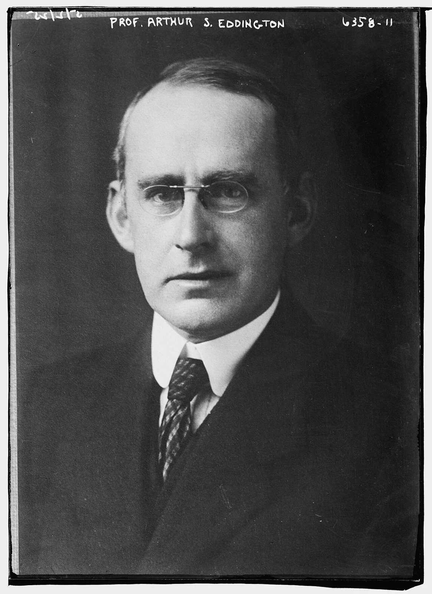
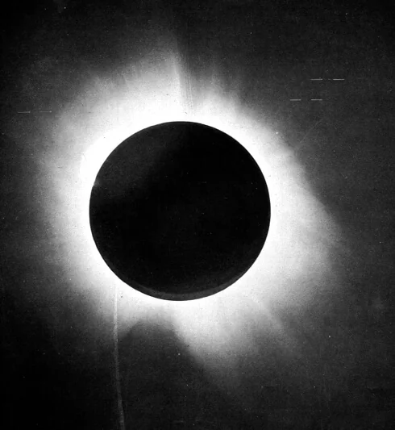
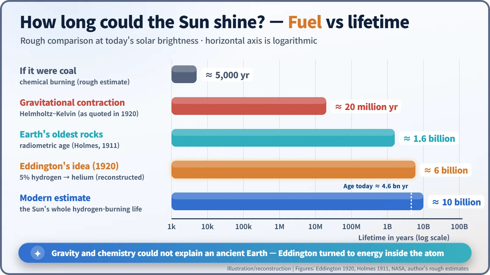
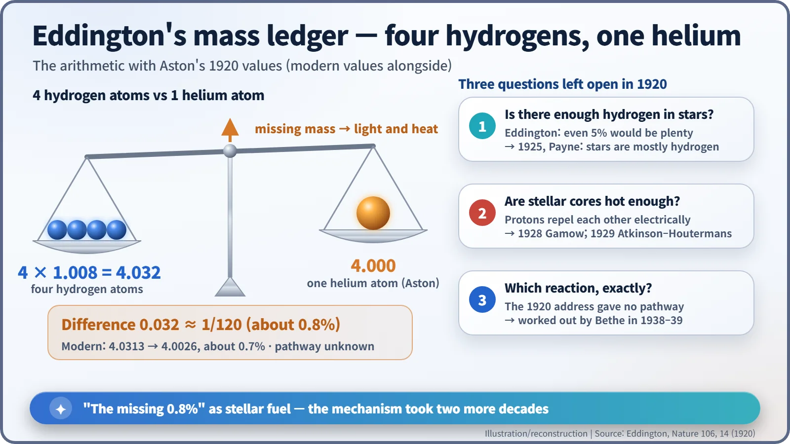
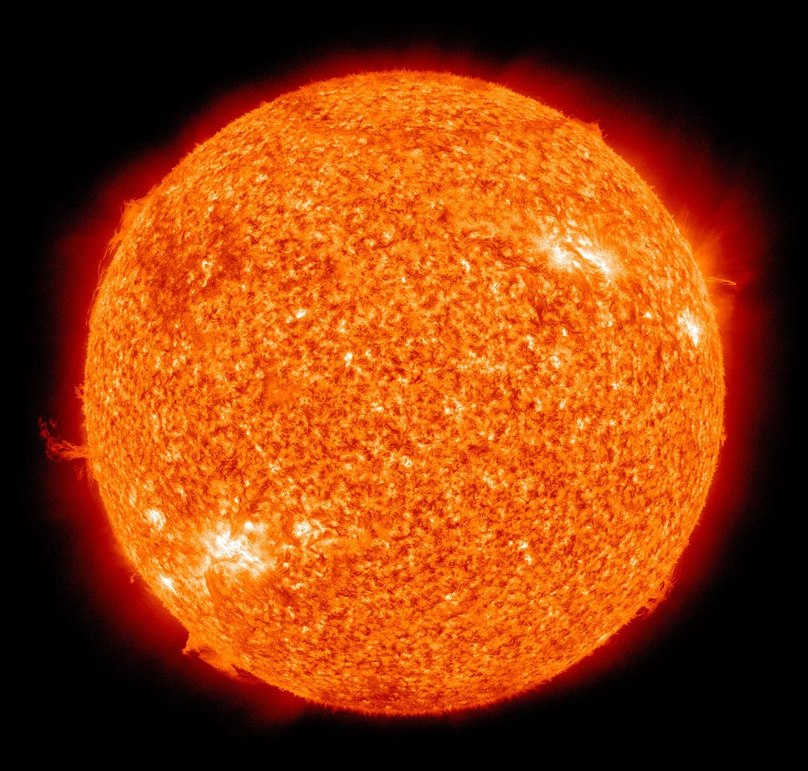

Nuclear History · 033
What If the Sun Were a Lump of Coal? — Eddington's Stellar Energy Hypothesis (1920)
A helium atom weighs about 1/120 less than four hydrogen atoms, and Eddington bet that the missing mass was what keeps the stars burning.
On 24 August 1920, in Cardiff, Arthur Eddington told the British Association that gravitational contraction could not keep the Sun shining for long enough. Using Francis Aston's finding that a helium atom weighs about 1/120 less than four hydrogen atoms, he proposed that stars run on "sub-atomic energy" released as hydrogen turns into helium. He could not say how the reaction works; that took two more decades.
What if the Sun were a lump of coal?
Start with a silly thought experiment. Suppose the Sun were one enormous lump of coal, burning as brightly as it does today. How long would it last? A rough calculation gives only about 5,000 years. Had it been lit when the pyramids were going up, it would be guttering out about now. So whatever powers the Sun, it is not coal. Then what is it? On 24 August 1920, in a lecture hall in Cardiff, Wales, an astronomer offered a bold answer. [2]

The eclipse star asks about the Sun's fuel
The speaker was Arthur Stanley Eddington (1882–1944) of the University of Cambridge. Just a year earlier, on 29 May 1919, he had observed a total solar eclipse from the island of Príncipe off West Africa, leading the effort that confirmed Einstein's prediction that starlight bends around the Sun. The result had made him world-famous almost overnight. [3]

At the annual meeting of the British Association for the Advancement of Science, Eddington gave the opening address of the mathematics and physics section as its president. His title was "The Internal Constitution of the Stars", and the full text appeared in Nature (vol. 106) on 2 September 1920. Most of the address dealt with pressure and the flow of radiation inside stars. Near the end, though, he took aim at the accepted wisdom of the day. [1]
An "unburied corpse"
Since the nineteenth century, the standard answer had been gravitational contraction: the Sun slowly shrinks under its own weight and turns the released energy into heat. As Eddington put it, Lord Kelvin had shown that this idea, due to Helmholtz, "necessarily dates the birth of the Sun about 20,000,000 years ago". Yet geologists dating rocks by their radioactive elements were already finding ages of hundreds of millions to more than a billion years. "Lord Kelvin's date of the creation of the Sun is treated with no more respect than Archbishop Ussher's," Eddington quipped. [1]
He brought evidence from the stars too. Cepheid variables, stars whose brightness pulses on a regular rhythm, should have been speeding up by about 40 seconds a year if they were contracting. The observed change was less than 1/400 of that. His verdict was blunt: only "the inertia of tradition" kept the contraction hypothesis alive — "or rather, not alive, but an unburied corpse." A star, he argued, must be drawing on a vast reservoir that "can scarcely be other than the sub-atomic energy which, it is known, exists abundantly in all matter." [1]

Betting on the gap between 4.032 and 4
His evidence came from a Cambridge colleague, Francis William Aston (1877–1945), who had been weighing atoms with unprecedented precision. Hydrogen came out at 1.008, helium at exactly 4. At the time, a helium nucleus was thought to be built from four hydrogen atoms (plus two electrons), so four hydrogens should add up to 4.032. Helium weighs 4. In Eddington's words: "There is a loss of mass in the synthesis amounting to about 1 part in 120." And since "mass cannot be annihilated", the deficit had to be the mass of the energy set free in the transformation. In effect he was applying Einstein's E = mc² — the rule that mass and energy can turn into each other — to the stars. [1]
The payoff was striking. "If 5 per cent of a star's mass consists initially of hydrogen atoms," he said, "the total heat liberated will more than suffice for our demands." Plugging his assumptions into today's solar output gives roughly 6 billion years — a reconstruction, not a figure Eddington quoted. Today we know the Sun converts about 4 million tonnes of mass into light and heat every second. [5]

Eddington also pointed to Ernest Rutherford's recent experiments, in which bombarding nitrogen had knocked fragments out of its nuclei: "what is possible in the Cavendish laboratory may not be too difficult in the Sun." Then he closed with a sentence that still echoes: "If, indeed, the sub-atomic energy in the stars is being freely used to maintain their great furnaces, it seems to bring a little nearer to fulfilment our dream of controlling this latent power for the well-being of the human race—or for its suicide." [1] [4]
The books balanced, but the method was missing
One point matters for the history. Eddington did not discover nuclear fusion reactions. What he presented was a mass ledger; he did not explain how hydrogen actually becomes helium. He even admitted the address "has at times verged on being a little bit speculative". Around the same time, the French physicist Jean Perrin reached a similar idea independently. [2]
The objections were serious. Atomic nuclei carry positive charge and repel each other, and the calculated temperatures inside stars seemed far too low to force them together. A famous retort, widely quoted from Eddington's 1926 book The Internal Constitution of the Stars, runs: "We do not argue with the critic who urges that the stars are not hot enough for this process; we tell him to go and find a hotter place."
The answers arrived one by one. In 1925 Cecilia Payne showed that stars are made mostly of hydrogen. In 1928 George Gamow described quantum tunnelling — a particle's chance of slipping through a barrier it seemingly cannot climb — and in 1929 Robert Atkinson and Fritz Houtermans used it to show that nuclear reactions in stars were possible. The detailed reaction pathways had to wait for Hans Bethe in 1938–39.

The first nuclear reactor went critical 22 years after the Cardiff address. The dream of controlling the energy inside the atom began not in a laboratory but with a question asked of the night sky — and it arrived complete with a warning about where that power might lead.